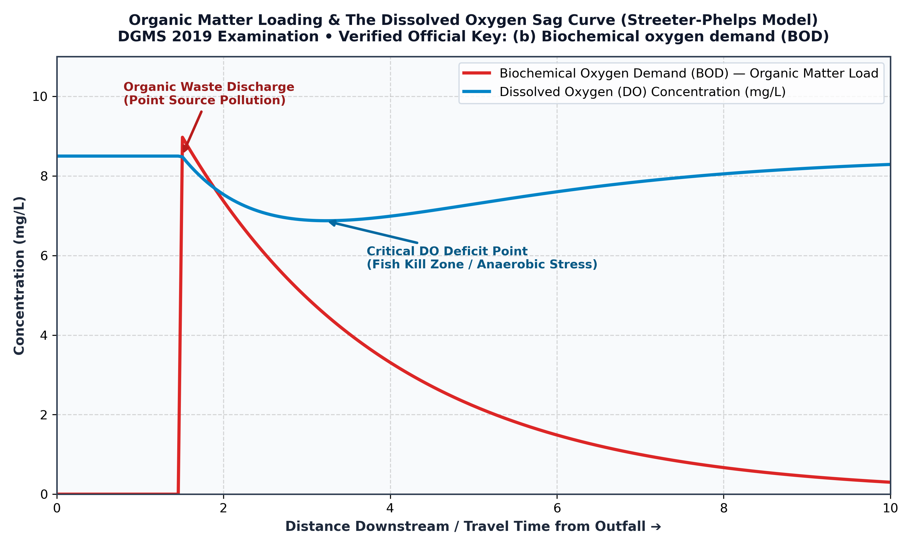

In environmental geology, aquatic chemistry, and limnology (Masters & Ela, Introduction to Environmental Engineering and Science; Metcalf & Eddy, Wastewater Engineering):
Therefore, the biodegradable organic matter load in a natural water body is universally described as (b) Biochemical oxygen demand.

| Parameter | Definition & Principle | Test Duration / Condition | Role in Water Quality Assessment |
|---|---|---|---|
| Biochemical Oxygen Demand (BOD) | $\text{O}_2$ consumed by aerobic bacteria decomposing biodegradable organics. | 5 days at 20°C ($\text{BOD}_5$); standard dilution method. | Standard descriptor of organic pollution load in natural rivers and lakes. Pristine water < 2 mg/L; polluted water > 10 mg/L. |
| Chemical Oxygen Demand (COD) | $\text{O}_2$ consumed by chemical digestion of all organics using boiling $\text{K}_2\text{Cr}_2\text{O}_7$ / $\text{H}_2\text{SO}_4$. | 2 to 3 hours at 150°C. | Measures total oxidizable chemical and industrial waste load (biodegradable + refractory). |
| Dissolved Oxygen (DO) | Actual molecular oxygen dissolved in water. | Instantaneous electrochemical sensor or Winkler titration. | Critical for survival of fish and aerobic ecology (optimum 6–9 mg/L; lethal < 2 mg/L). |
| Total Hardness | Sum of $[\text{Ca}^{2+}]$ and $[\text{Mg}^{2+}]$ polyvalent cations. | EDTA titration method. | Controls soap lathering and scaling in industrial boilers; unrelated to organic matter load. |